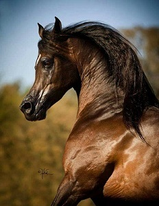
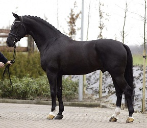
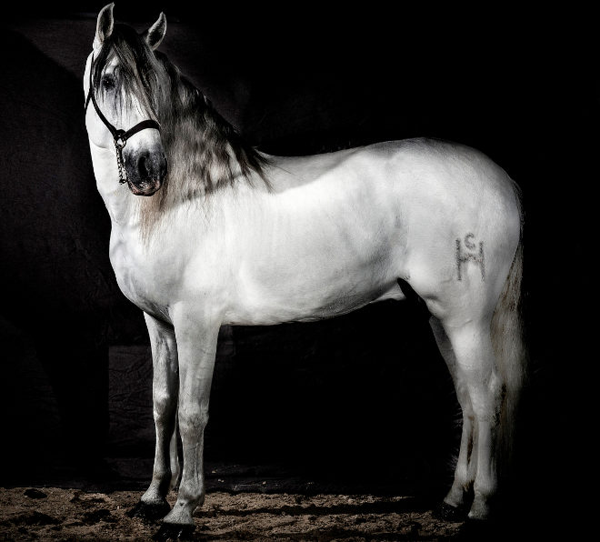
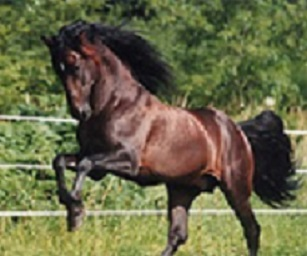
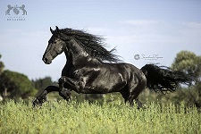
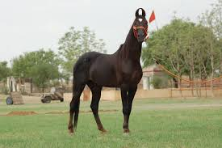

El caballo lusitano es una raza equina de origen portugués cuyo nombre deriva de Lusitania. Su fama remonta a Época Romana, que atribuía su velocidad a la influencia de viento de Poniente, que se consideraba capaz de fecundar a las yeguas. Se trata de un caballo ibérico de tipo barroco que está considerado como el más antiguo caballo de montar del mundo. Hasta la década de 1960 compartió libro de registro con el caballo andaluz.
Su alzada a la cruz va desde 150 a 160 cm, son compactos, de cuartos traseros musculosos, patas fuertes y largas, con gran amplitud en el paso, grupa inclinada, cola de inserción baja, pecho ancho, costillas redondeadas, amplia frente, nariz romana, crines y cola abundantes. Los caballos lusitanos presentan gran variedad de colores sólidos, siendo los menos frecuentes y buscados el palomino y el cremello.
Al igual que ocurre con el caballo andaluz, tradicionalmente se ha destacado su bravura, flexibilidad y nobleza que los hacen adecuados para la monta, el rejoneo y la doma clásica.
Como un caballo con grandes aptitudes para la guerra, este coraje le convierte en una de las razas más apreciadas para el toreo, siendo uno de los caballos preferidos por los rejoneadores, y una óptima cabalgadura para el turismo ecuestre.
Origen del caballo Lusitano
Definido como uno de los caballos de silla de más antigüedad en occidente, el caballo Lusitano tiene su origen en la Península Ibérica.
Los restos encontrados demuestran que sus antepasados son los caballos Sorraia y Árabe; caballos ibéricos que habitaron la Península Ibérica. Estas razas fueron consideradas de gran utilidad en la guerra, la agricultura y la caza por los pueblos que entonces habitaban nuestras tierras.
El Sorraia quedó aislado en la zona sur de Portugal y España. Pero con la entrada de diversas tribus africanas, en torno al año 3000 a. C., el caballo empezó a cruzarse y a recibir influencias de éstas civilizaciones. Es así, como la doma ejercida por estos pueblos, junto con las nuevas corrientes, fueron empezando a moldear al caballo Lusitano que conocemos hoy en día.
Sin embargo, no fue hasta que Juan V de Portugal decidió crear una caballería de caballos portugueses, cuando el caballo Lusitano comenzó su andadura.
Sin embargo, no fue hasta que Juan V de Portugal decidió crear una caballería de caballos portugueses, cuando el caballo Lusitano comenzó su andadura.
Cumpliendo el deseo del rey de Portugal (Juan V de Portugal) y el de su hijo de conseguir unos caballos de montura de excelente calidad, continuó la selección de ejemplares de Alter.
Resultado de este proceso, se crearon dos líneas de sangre: Andrade y Vegia, cuyo cruce daría origen al caballo Lusitano.
El nombre del caballo Lusitano hace referencia a Lusitania: una región romana de oeste de la Península Ibérica, cuyos territorios se encuentran estrechamente ligados al origen de esta raza.
Aunque el Lusitano fue considerado, entre los siglos XVII y XVIII el «caballo de los reyes», debido a su estrecha relación con la realeza; la llegada del Pura sangre Inglés, le hace perder su fama a lo largo del siglo XX.
Pese a ello, sus características físicas y su valentía le hicieron recuperar la popularidad. Por ello, ha sido considerado durante años como la raza ideal para el desfile, la alta escuela, la equitación y una gran variedad de deportes o modalidades de competición ecuestre.
En la actualidad, su cría en Portugal tiene bastante éxito, aunque en Brasil, Francia y México aumentan sus seguidores.
Otro grupo de países como Bélgica, Alemania, Italia, España, Reino Unido y Holanda también poseen diversas yeguadas de la raza.
Características físicas
El caballo Lusitano es de tipo eumétrico, es decir, de volumen medio y combinación perfecta de superficie y masa.
Las principales características del caballo lusitano son su tronco fuerte y grupa redondeada. Con una alzada de entre 150 y 160 cm, su cola baja y un paso amplio, hace alarde de su elegancia al caminar. Además, sus extremidades son muy alargadas, tanto en lo que respecta a los antebrazos, como a las cañas.
Por otro lado, destacan sus capas en tonos sólidos, siendo más frecuentes, el torno y el castaño.
Su cabeza está bien proporcionada, sus orejas son finas y expresivas, y su pescuezo de largura media. En resumen, un pura sangre que no pasa inadvertido.
Comportamiento y carácter
Su histórica capacidad para los ejercicios de alta escuela, y la valentía para el manejo de ganado y el combate, ponen de manifiesto su agilidad e inteligencia.
Además, las características físicas antes anunciadas, muestran su capacidad atlética; incluida su facilidad para el salto y su flexibilidad.
Finalmente, no podemos olvidar que su rapidez y equilibrio, también han hecho al caballo Lusitano extremadamente presente en los toros. Su capacidad para mantener la calma, y esquivar obstáculos, han impulsado su empleo en esta tradición.
Alimentación
En lo que a su alimentación se refiere, recomendamos proporcionarle comida en escasa cantidad y con relativa frecuencia, dado que el estómago del caballo es de reducido tamaño. De este modo, sugerimos no superar los 2,5 kg de alimento concentrado por ración. Aun así, debemos considerar el trabajo y ejercicio físico al que esté sometido el caballo.
Además, se recomienda basar la dieta más en forrajes que en alimentos concentrados para una mejor digestión de los alimentos. Por ello, sugerimos el heno de hierba como base de la alimentación y limitar la cantidad de cereales proporcionados.
Igualmente, sobre todo en épocas de calor, os recordamos que la hidratación del caballo es tan importante como la comida. En la medida de lo posible, mantén su acceso al bebedero.
|
|

|
|

|

|

|

|

|